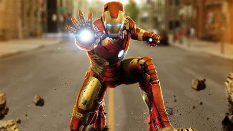
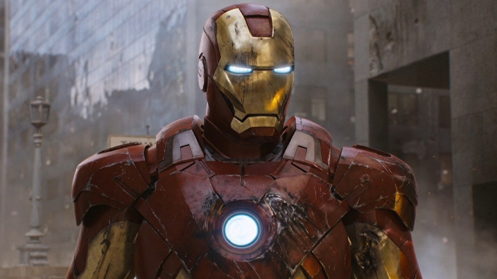

Tony Stark Suits
Welcome To The Tony Starks Garges
ABOUT US
With over five decades of comics and nearly ten years of movies, it should come as no surprise that Tony Stark’s arsenal of armor clocks in at well over 100 different suits: everything from standard sets to specialized climate variants to magic-enhanced suits of armor have popped up over the years

MARK 1
The Mark I (Mark 1), is the first Iron Man suit built and created by Tony Stark. It was built in the initial events of the live-action film, Iron Man. The suit was later used as a model for Obadiah Stane's Iron Monger suit.It was featured in the first Iron Man movie, and first appeared when Tony and Ho Yinsen were held captive by the terrorist group known as the Ten Rings. While they were held captive, Tony and Yinsen devised a plan. In the cave, they created the blueprints for the Mark I.
MARK 2
The Mark II (Mark 2), was the second Iron Man Armor designed and created by Tony Stark and is the successor to the original Mark I armor. It was constructed as a prototype with an emphasis on exploring flight potential. As the first suit of Iron Man Armor built at Stark Industries, the Mark II armor features new technology compared to the effective but crude Mark I armor. It was soon replaced by the Mark III armor after its initial flight testing revealed its inability to reach the higher atmosphere due to the build up of ice.
MARK 4
After the Mark III suffered irreparable damage in Tony Stark's battle with Obadiah Stane's Iron Monger Armor, Stark built the Mark IV suit to replace it, becoming the primary suit that Stark used in all of his activities as Iron Man.While still tinkering with the armor's gauntlet, Stark brought it to Germany, where he had a business meeting with Gorani Insurance. Stark was stopped by a police roadblock looking for stolen paintings, but the police instead found the gauntlet, dismissing Stark. Stark came across the people who stole the paintings and engaged them, blasting them all with the gauntlet.
THE FORMER CEO OF STARK INSDUSTRIES- TONY STARK
" Tony Stark created the Mark L Armor by relying on nanotechnology. The suit was entirely contained in a detachable housing unit of nanoparticles which could deploy over Stark's body with a simple push on it. While Stark and Pepper Potts were jogging, Potts remarked on how the fact that Stark had built another suit of armor was a sign that he did not really want to start a family and settle down. "
THE BEST SUITS OF TONY STARK
NANO TECH.

HULK BUSTER
MARK 12
